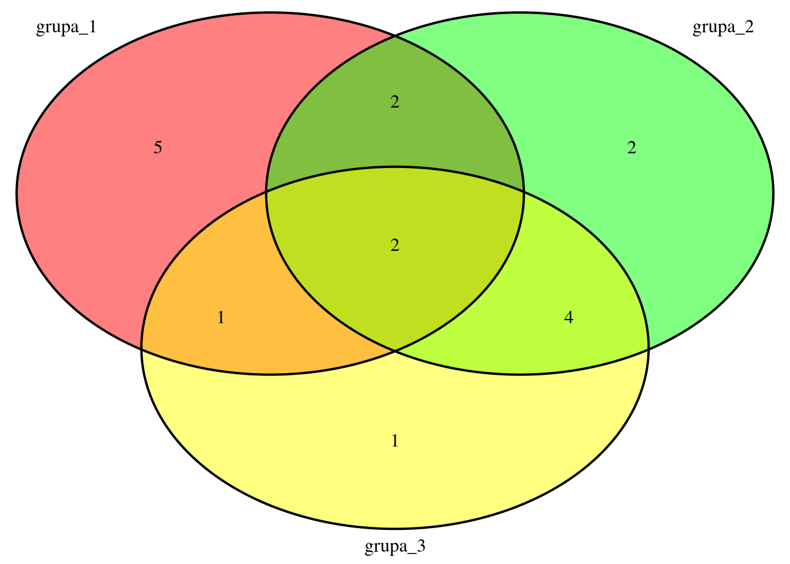

Chapter 6 Statystyka
W tej części opieram się w dużej mierze na książce “Przewodnik po pakiecie R” P. Biecka oraz na kursie “Środowisko R od podstaw.” Nie ma ona być wprowadzeniem do statystyki jako takiej, ale jedynie pokazaniem jakie funkcje R można wykorzystać do przeprowadzenie często stosowanych analiz statystycznych.
Przystępne wprowadzenie do statystyki dla biologów znalazłam na stronie dotyczącej badania C. elegans - wormbook.org. Bardzo mało matematyki i wzorów, za to sporo przykładów, szkoda tylko, że nie ma nic o R ;)
6.1 Podstawowe statystyki opisowe
Skrócone podsumowanie danych liczbowych otrzymamy przy użyciu summary - średnia, mediana, wartość min i max, oraz pierwszy i trzeci kwantyl.
Podstawowe funkcje służące do opisu danych to:
| Funkcja | Opis | Uwagi |
|---|---|---|
mean |
średnia | |
median |
mediana | |
sd |
odchylenie standardowe | |
var |
wariancja | |
min |
wartość minimalna | |
max |
wartość maksymalna | |
range |
zakres danych | |
IQR |
rozstęp kwartylowy | |
geometric.mean |
średnia geometryczna | |
weighted.mean |
średnia ważona | musimy podać wektor wag do każdego elementu |
kurtosis |
kurtoza | pakiet moments |
skewness |
skośność | pakiet moments |
mlv |
moda | pakiet modeest |
quantile |
wybrane kwantyle | należy podać, które kwantyle mają być policzone |
mad |
odchylenie medianowe |
wektor <- rnorm(1000, mean=2)
mean(wektor)## [1] 2.008501median(wektor)## [1] 2.00913range(wektor)## [1] -1.253799 4.865792quantile(wektor, c(0.25, 0.4, 0.5, 0.6, 0.75))## 25% 40% 50% 60% 75%
## 1.271471 1.725972 2.009130 2.273003 2.737301library(modeest)
mlv(wektor, method = 'shorth')## [1] 1.8686636.2 Liczby pseudolosowe
Podczas pracy w R często przydaje się możliwość szybkiego wygenerowania liczb z danego rozkładu. Można w ten sposób np. przetestować nową funkcję (również własną ;) )
Wszystkie takie funkcje zaczynają się od r, a ich pierwszy argument to ilość liczb jaka ma zostać wygenerowana.
Jeżeli chcemy dwa razy wygenerować takie same liczby należy najpierw ustawić ziarno - set.seed
| Funkcja | opis | parametry |
|---|---|---|
runif |
rozkład jednostajny, od 0 do 1 | zmiana wartości min i max rozkładu |
rnorm |
rozkład normalny, średnia = 0, odchylenie = 1 | zmiana mean i sd |
rlnorm |
rozkład log-normalny | zmiana meanlog i sdlog |
rexp |
rozkład wykładniczy | zmiana rate |
rbinom |
rozkład dwumianowy | ustawiamy wielkość (size) i prawdopodobieństwo (prob) |
a <- rnorm(1000)
b <- rlnorm(1000)
c <- rexp(1000)
d <- runif(1000)
par(mfrow=c(2,2))
hist(a, main="Normalny")
hist(b, main = "Log-Normalny")
hist(c, main = "Wykładniczy")
hist(d, main = "Jenostajny")par(mfrow=c(1,1))Możemy też potrzebować wektor losowych wartości z danego zakresu. Służy do tego funckja sample. Pierwszym jej argumentem jest wektor, z którego mają być losowane wartości, drugim ilość elementów do losowania. Można też podać czy losowanie ma być ze zwracaniem (replace=TRUE) i wektor prawdopodobieństwa dla każdego elementu, jeżeli nie mają być takie same. Prawdopodobieństwa muszą sumować się do 1.
# Symulacja 200 rzutów kością
kosc <- sample(1:6, 200, replace = TRUE)
barplot(table(kosc))
# Symulacja nieuczciwej kości
kosc2 <- sample(1:6, 200, replace = TRUE, prob = c(0.1, 0.1, 0.1, 0.2, 0.2, 0.3))
barplot(table(kosc2))
6.3 Podstawowe testy statystyczne
6.3.1 Test t-studenta - weryfikacja równości średnich
Można go wykonać dla jednej lub dwóch prób przy pomocy funkcji t.test. Dane muszą być z rozkładu normalnego, ale domyślnie nie muszą mieć równej wariancji.
Przy teście dla jednej próby należy podać wartość średniej mu, do której ma zostać przyrównana próba (domyślnie wynosi 0).
Przy teście dla dwóch prób możemy również wykonać test dla prób sparowanych - paired=TRUE - sprawdzamy czy różnica między próbami jest różna od 0 np. dane przed i po dodaniu jakiegoś czynnika
Domyślnie wykonywany jest test dwustronny, możemy to zmienić parametrem alternative ustawiając "less" albo "greater".
Wynik testu podaje nam kilka wartości:
wartość statystyki testowej
ilość stopni swobody
p-value - minimalny poziom istotności dla którego możemy odrzucić hipotezę zerową. Np. p-value równy 0.05 oznacza, że jeżeli odrzucimy hipotezę zerową istnieje 5% szans, że popełnimy błąd
hipoteza alternatywna
przedział ufności dla wyliczonej średniej albo różnicy między średnimi
średnia z próby
Możemy wyświetlić wszystkie te wartości albo jedynie interesujące nas poprzez znak $ np. t.test(x)$p.value. Wynik takiego testu można też przypisać do zmiennej i wykorzystać później.
x <- rnorm(100)
y <- rnorm(100, mean=1)
# test dla jednej próby, porównanie do średnia równej 0
t.test(x)##
## One Sample t-test
##
## data: x
## t = -0.31224, df = 99, p-value = 0.7555
## alternative hypothesis: true mean is not equal to 0
## 95 percent confidence interval:
## -0.2042882 0.1487354
## sample estimates:
## mean of x
## -0.02777643t.test(y)##
## One Sample t-test
##
## data: y
## t = 9.0505, df = 99, p-value = 1.287e-14
## alternative hypothesis: true mean is not equal to 0
## 95 percent confidence interval:
## 0.7738458 1.2084402
## sample estimates:
## mean of x
## 0.991143# test dla dwóch prób
t.test(x,y)##
## Welch Two Sample t-test
##
## data: x and y
## t = -7.2217, df = 190.02, p-value = 1.203e-11
## alternative hypothesis: true difference in means is not equal to 0
## 95 percent confidence interval:
## -1.2972245 -0.7406144
## sample estimates:
## mean of x mean of y
## -0.02777643 0.99114303wynik <- t.test(x,y)
wynik$p.value## [1] 1.203272e-11wynik$conf.int## [1] -1.2972245 -0.7406144
## attr(,"conf.level")
## [1] 0.95# test t można przeprowadzić dla większej ilości grup przy pomocy pairwise.t.test,
# wartości p zostaną wtedy dostoswane do wielokrotnego powtarzania testu
pairwise.t.test(dane1$pomiar, dane1$Szczep)##
## Pairwise comparisons using t tests with pooled SD
##
## data: dane1$pomiar and dane1$Szczep
##
## A B
## B <2e-16 -
## C <2e-16 <2e-16
##
## P value adjustment method: holmJeżeli nie wiemy z jakiego rozkładu pochodzą dane możemy wykorzystać test nieparametryczny - test Wilcoxona wilcox.test, też podaje wartość p.
Analogicznie dla t.test istnieje funkcja pairwise.wilcox.test
wilcox.test(x,y)##
## Wilcoxon rank sum test with continuity correction
##
## data: x and y
## W = 2379, p-value = 1.525e-10
## alternative hypothesis: true location shift is not equal to 06.3.2 Test F - weryfikacja równości wariancji
Podobny w składni do t.test, wykonujemy funkcją var.test. Również zakładamy, że dane pochodzą z rozkładu normalnego. Zastosowanie go dla danych z innych rozkładów może prowadzić do błędnych wniosków.
var.test(x,y)##
## F test to compare two variances
##
## data: x and y
## F = 0.65984, num df = 99, denom df = 99, p-value = 0.0398
## alternative hypothesis: true ratio of variances is not equal to 1
## 95 percent confidence interval:
## 0.4439686 0.9806782
## sample estimates:
## ratio of variances
## 0.6598411z <- rnorm(100, sd=3)
var.test(x,z)##
## F test to compare two variances
##
## data: x and z
## F = 0.076738, num df = 99, denom df = 99, p-value < 2.2e-16
## alternative hypothesis: true ratio of variances is not equal to 1
## 95 percent confidence interval:
## 0.05163257 0.11405070
## sample estimates:
## ratio of variances
## 0.076738066.3.3 Testowanie zgodności z rozkładem normalnym i dopasowywanie parametrów rozkładu
Metoda graficzna to wspomniany już wykres kwantylowy (qqPlot).
Kilka testów, które można wykorzystać znajduje się w pakiecie nortest np. shapiro.test, cvm.test.
Test Shapiro-Wilka należy do bardziej popularnych, liczba obserwacji powinna mieścić się w zakresie od 3 do 5000.
x <- rnorm(500)
y <- rlnorm(500, sdlog = 0.5)
# histogram i wykres kwantylowy dla danych x i y
par(mfrow = c(2,2))
hist(x)
hist(y)
qqPlot(x)## [1] 205 237qqPlot(y)
## [1] 221 99par(mfrow = c(1,1))
# test Shapiro-Wilka do sprawdzania zgodności z rozkładem normalnym
shapiro.test(x)##
## Shapiro-Wilk normality test
##
## data: x
## W = 0.99823, p-value = 0.8944shapiro.test(y)##
## Shapiro-Wilk normality test
##
## data: y
## W = 0.9017, p-value < 2.2e-16Do sprawdzenie zgodności z zadanym rozkładem możemy wykorzystać test Kołmogorowa-Smirnowa - ks.test. Do funkcji należy podać wektor obserwacji oraz albo drugi wektor obserwacji (sparwdzamy czy pochodzą z takiego samego rozkładu) albo nazwę funkcji obliczającej dystrybuantę rozkładu np. pnorm (normalny), plnorm (log-normalny), punif (jednostajny).
Jeżeli parametry rozkładu różnią się od domyślnych to należy je podać np. mean i sd dla rozkładu normalnego.
x <- rnorm(1000)
x1 <- rnorm(1000)
x2 <- rnorm(1000, mean = 2)
y <- rlnorm(1000, sdlog = 0.5)
# Sprawdzamy czy obserwacje mają taki sam rozkład
ks.test(x,x1)##
## Two-sample Kolmogorov-Smirnov test
##
## data: x and x1
## D = 0.037, p-value = 0.5004
## alternative hypothesis: two-sidedks.test(x,x2)##
## Two-sample Kolmogorov-Smirnov test
##
## data: x and x2
## D = 0.671, p-value < 2.2e-16
## alternative hypothesis: two-sidedks.test(x,y)##
## Two-sample Kolmogorov-Smirnov test
##
## data: x and y
## D = 0.64, p-value < 2.2e-16
## alternative hypothesis: two-sided# Sprawdzamy czy x pochodzi z rozkładu normalnego czy log-normalnego
ks.test(x, pnorm)##
## One-sample Kolmogorov-Smirnov test
##
## data: x
## D = 0.022326, p-value = 0.7012
## alternative hypothesis: two-sidedks.test(x, plnorm)##
## One-sample Kolmogorov-Smirnov test
##
## data: x
## D = 0.54985, p-value < 2.2e-16
## alternative hypothesis: two-sided# Jeżeli nie podamy, że średnia x2 równa się 2 otrzymamy błędny wynik
ks.test(x2, pnorm)##
## One-sample Kolmogorov-Smirnov test
##
## data: x2
## D = 0.68387, p-value < 2.2e-16
## alternative hypothesis: two-sidedks.test(x2, pnorm, mean = 2)##
## One-sample Kolmogorov-Smirnov test
##
## data: x2
## D = 0.020089, p-value = 0.8144
## alternative hypothesis: two-sided# Czy y pasuje do rozkładu normalnego czy log-normalnego
ks.test(y, pnorm, sd = 0.5)##
## One-sample Kolmogorov-Smirnov test
##
## data: y
## D = 0.7663, p-value < 2.2e-16
## alternative hypothesis: two-sidedks.test(y, plnorm, sd = 0.5)##
## One-sample Kolmogorov-Smirnov test
##
## data: y
## D = 0.02376, p-value = 0.6249
## alternative hypothesis: two-sidedDo oszacowania parametrów rozkładu można wykorzystać funkcję fitdistr z pakietu MASS. Podajemy wektor obserwacji oraz funkcję gęstości rozkładu. Rozpoznawane funkcje to np. "normal", "log-normal", "exponential", "f", "t" itp.
x <- rnorm(1000, mean=20, sd=0.5)
library(MASS)##
## Attaching package: 'MASS'## The following object is masked from 'package:patchwork':
##
## area## The following object is masked from 'package:dplyr':
##
## select# obliczamy parametry rozkładu normalnego i log-normalnego dla danych x
fit <- fitdistr(x, "normal")
fit## mean sd
## 20.02764577 0.51181914
## ( 0.01618514) ( 0.01144462)fit2 <- fitdistr(x, "log-normal")
fit2## meanlog sdlog
## 2.9967861138 0.0256138133
## (0.0008099799) (0.0005727423)# sprawdzamy czy dane x faktycznie pochodzą z rozkładu o parametrach obliczonych wyżej
ks.test(x, pnorm, fit$estimate[1], fit$estimate[2])##
## One-sample Kolmogorov-Smirnov test
##
## data: x
## D = 0.013869, p-value = 0.9906
## alternative hypothesis: two-sidedks.test(x, pnorm, fit2$estimate[1], fit2$estimate[2])##
## One-sample Kolmogorov-Smirnov test
##
## data: x
## D = 1, p-value < 2.2e-16
## alternative hypothesis: two-sidedy <- rlnorm(1000, sdlog = 0.4)
fitdistr(y, "log-normal")## meanlog sdlog
## -0.010771248 0.395992732
## ( 0.012522390) ( 0.008854667)6.3.4 Obliczanie przedziałów ufności dla średniej i błędu standardowego
Błąd standardowy obliczamy ze wzoru: \[SEM= odch/\sqrt{n}\]. Pokazuje estymowane odchylenie pomiędzy prawdziwą średnią populacji, a obliczoną dla próby.
W R nie ma funkcji liczącej błąd standardowy, ale można takie przeliczenie wykonać samemu albo napisać taką funkcję
x <- rnorm(300, mean=10, sd=0.5)
mean(x)## [1] 10.04872sd(x)## [1] 0.5133524SEM <- sd(x)/sqrt(length(x))
cat("Błąd standardowy wynosi", SEM)## Błąd standardowy wynosi 0.02963841Przedział ufności o istotności 0.95 mówi nam, że prawdopodobieństwo znalezienia estymowanego parametru w tym przedziale wynosi 95%.
Przedział ufności dla rozkładu normalnego przy poziomie istotności 0.95 wyliczamy ze wzoru: \[ci= 1.96*odch/\sqrt{n}\] \[Średnia +/- ci\]
1.96 to 0.975 kwantyl rozkładu normalnego.
Zamiast 1.96 możemy podstawić wartość wyliczoną z rozkładu t przy pomocy: qt(0.975, df)
Przy dużej liczebności próby (ok. 300) wyjdzie na to samo.
set.seed(120)
x <- rnorm(100, mean=3, sd=0.75)
(srednia<-round(mean(x),2))## [1] 3.02round(sd(x),2)## [1] 0.79ci <- round(1.96*sd(x)/sqrt(length(x)),2)
lower <- srednia-ci
upper <- srednia+ci
cat("Średnia x wynosi", srednia, "w przedziale ufności", lower, upper)## Średnia x wynosi 3.02 w przedziale ufności 2.86 3.18ci <- round(qt(0.975, df=(length(x)-1))*sd(x)/sqrt(length(x)),2)
lower <- srednia-ci
upper <- srednia+ci
cat("Średnia x wynosi", srednia, "w przedziale ufności", lower, upper)## Średnia x wynosi 3.02 w przedziale ufności 2.86 3.18Przedział ufności dla średniej można też znaleźć w wyniku t.test.
6.3.5 Testowanie korelacji
Wartość korelacji zawiera się pomiędzy -1 a 1. 0 oznacza całkowity brak korelacji. Do 0.7 korelację określamy jako silną.
Korelację obserwacji z dwóch wektorów albo całej macierzy można obliczyć przy pomocy funkcji cor. Domyślnie obliczona zostanie za pomocą metody Pearsona, można to zmienić na metodę Spearmana - method="spearman". Metoda Spearmana jest mniej wrażliwa na obserwacje odstające.
Jeżeli chcemy poznać szczegóły dotyczące korelacji możemy użyć cor.test. Też można wybrać metodę, podaje również wartość p dla korelacji, przedział ufności, ilość stopni swobodi itp.
x <- sort(runif(30))
y <- sort(runif(30))
plot(x, y)cor(x, y)## [1] 0.9866882cor(x, y, method = "spearman")## [1] 1cor.test(x, y)##
## Pearson's product-moment correlation
##
## data: x and y
## t = 32.105, df = 28, p-value < 2.2e-16
## alternative hypothesis: true correlation is not equal to 0
## 95 percent confidence interval:
## 0.9719054 0.9937173
## sample estimates:
## cor
## 0.9866882# dodajemy wartość bardzo odstającą :)
x <- c(x, -100)
y <- c(y, 10)
plot(x, y)
# wartość korelacji wyliczona metodą spearmana zmienia się dużo mniej
cor(x, y)## [1] -0.9816699cor(x, y, method = "spearman")## [1] 0.8125# wartość odstająca może też dać korelację pearsona tam gdzie jej wcale nie ma
# ale korelacja spearmana nie zmieni się tak bardzo
x <- sort(runif(30))
y <- runif(30)
plot(x, y)
cor(x, y)## [1] 0.1557759x <- c(x, 10)
y <- c(y, 10)
plot(x, y)
cor(x, y)## [1] 0.9762845cor(x, y, method="spearman")## [1] 0.23830656.3.6 Test chi-kwadrat - zgodność rozkładu zmiennych jakościowych
Służy do weryfikacji zależności pomiędzy dwiema zmiennymi jakościowymi, funkcja chisq.test. Jako argument najlepiej podstawić macierz kontyngencji wyliczoną funkcją table. Poza wartością p można też sprawdzić wartości oczekiwane - wynik$expected. Test chi^2 można wykorzystać też dla wiekszych macierzy.
Dla tablic 2x2 można również użyć dokładnego testu Fishera - fisher.test.
# Wygenerujemy przykładowe dane - takie same
x <- data.frame(jeden = sample(c("A","B"),200, replace = TRUE),
dwa = sample(c("grupa1","grupa2"),200, replace = TRUE))
# różne
y <- data.frame(jeden = c(sample(c("A","B"),100, replace = TRUE, prob = c(0.4,0.6)),
sample(c("A","B"),100, replace = TRUE, prob = c(0.7,0.3))),
dwa = rep(c("grupa1","grupa2"),each = 100))
(tabela_x <- table(x))## dwa
## jeden grupa1 grupa2
## A 45 50
## B 52 53(tabela_y <- table(y))## dwa
## jeden grupa1 grupa2
## A 40 77
## B 60 23chisq.test(tabela_x)##
## Pearson's Chi-squared test with Yates' continuity correction
##
## data: tabela_x
## X-squared = 0.02654, df = 1, p-value = 0.8706chisq.test(tabela_y)##
## Pearson's Chi-squared test with Yates' continuity correction
##
## data: tabela_y
## X-squared = 26.691, df = 1, p-value = 2.387e-07fisher.test(tabela_x)##
## Fisher's Exact Test for Count Data
##
## data: tabela_x
## p-value = 0.7786
## alternative hypothesis: true odds ratio is not equal to 1
## 95 percent confidence interval:
## 0.5068482 1.6595976
## sample estimates:
## odds ratio
## 0.9177044fisher.test(tabela_y)##
## Fisher's Exact Test for Count Data
##
## data: tabela_y
## p-value = 1.675e-07
## alternative hypothesis: true odds ratio is not equal to 1
## 95 percent confidence interval:
## 0.1025177 0.3835088
## sample estimates:
## odds ratio
## 0.2009083Jeżeli chcemy tylko sprawdzić prawdopodobieństwo możemy użyć testu propocji - prop.test
# przykładowo czy 785 sukcesów na 1500 prób jest istotnie różne od p=0.5
prop.test(785, 1500, p = 0.5)##
## 1-sample proportions test with continuity correction
##
## data: 785 out of 1500, null probability 0.5
## X-squared = 3.174, df = 1, p-value = 0.07482
## alternative hypothesis: true p is not equal to 0.5
## 95 percent confidence interval:
## 0.4976972 0.5488486
## sample estimates:
## p
## 0.5233333# można też wykonać test proporcji dla większej ilości danych - pairwise.prop.test
x <- c(190,475,350,65)
n <- c(500,1000,800,250)
pairwise.prop.test(x, n, p.adjust.method = "bonferroni")##
## Pairwise comparisons using Pairwise comparison of proportions
##
## data: x out of n
##
## 1 2 3
## 2 0.0035 - -
## 3 0.2803 0.7427 -
## 4 0.0086 7.8e-09 4.8e-06
##
## P value adjustment method: bonferroni6.4 Modelowanie - czyli jak dopasować linię trendu
Zależność pomiędzy dwiema zmiennymi ilościowymi najłatwiej przedstawić na wykresie rozrzutu. Kolejnym krokiem może być próba dopasowania do danych jakiegoś modelu np. liniowego, ale może być też bardziej złożony np. model wzrostu logistycznego, Michaelisa-Menten itp.
6.4.1 Regresja liniowa
Najbardziej popularną funkcją w R do wyznaczania modeli liniowych jest lm. Wymaga jedynie podania formuły opisującej modelowaną przez nas zależność i ramki danych.
# Jako przykład wykorzystamy zbiór danych R dotyczący wzrostu drzewek pomarańczowych
orange <- Orange
head(orange, 3)## Grouped Data: circumference ~ age | Tree
## Tree age circumference
## 1 1 118 30
## 2 1 484 58
## 3 1 664 87# wykres obwodu drzewa od wieku
plot(orange$age, orange$circumference)
Formuły zapisujemy korzystając z ~ , np.: * zależność y od x: y~x, * zależność y od x i z: y ~ x + z, * zależność y od x, z i interakcji pomiędzy x i z: y ~ x + z + x:z albo y ~ x * z
fit <- lm(circumference~age, data = orange)
fit$coefficients## (Intercept) age
## 17.3996502 0.1067703summary(fit)##
## Call:
## lm(formula = circumference ~ age, data = orange)
##
## Residuals:
## Min 1Q Median 3Q Max
## -46.310 -14.946 -0.076 19.697 45.111
##
## Coefficients:
## Estimate Std. Error t value Pr(>|t|)
## (Intercept) 17.399650 8.622660 2.018 0.0518 .
## age 0.106770 0.008277 12.900 1.93e-14 ***
## ---
## Signif. codes: 0 '***' 0.001 '**' 0.01 '*' 0.05 '.' 0.1 ' ' 1
##
## Residual standard error: 23.74 on 33 degrees of freedom
## Multiple R-squared: 0.8345, Adjusted R-squared: 0.8295
## F-statistic: 166.4 on 1 and 33 DF, p-value: 1.931e-14plot(orange$age, orange$circumference)
abline(fit, col = "green3")
Jeżeli chcemy jedynie wyznaczyć równanie funkcji liniowej - y = ax + b, wystarczy sprawdzić współczynniki dopasowanego modelu - coefficients. Intercept oznacza miejsce przecięcia z osią Y - współczynnik b, a age to wartość przez którą należy pomnożyć wiek drzewa żeby uzyskać jego obwód.
Można powiedzić że według naszego modelu każdego roku obwód drzewa zwiększa się o wartość 0.107 mm.
Funkcja summary pozwala zobaczyć wszystkie istotne informacje dotyczące naszego modelu.
Pierwsza linijka podsumowania zawiera powtórzenie formuły jaką podaliśmy w funkcji.
Następnie mamy podsumowanie wartości residuals - reszt. Są to różnice pomiedzy faktycznymi wartościami a wyznaczonymi ze wzoru. Model jest dobierany tak żeby suma kwadratów reszt była jak najmniejsza.
Potem mamy tabelę z wymienionymi wszystkimi współczynnikami modelu. Istotna jest ostatnia kolumna zawierająca wartość p, wartość powyżej 0.05 sugeruje że dana zmienna nie jest istotna dla modelu i można ją z niego usunąć.
Na końcu otrzymujemy jeszcze kilka wartości oceniających dobrany model jako całość. Znajoma powinna być wartość R-squared. Przyjmuje ona wartości z zakresu od 0 do 1 i oznacza procent wariancji obecnej w danych jaka może być wyjaśniona przy pomocy danego modelu. Może być przydatna przy ocenie który z kilku modeli wybrać do opisu naszych danych. Wartość adjusted R squared uwzględnia również ilość zmiennych jakie podaliśmy w formule.
6.4.2 Zmienne jakościowe w modelu
W modelu możemy uwzględniać również zmienne jakościowe, muszą one jednak zostać zakodowane - zmienione w dane liczbowe. Funkcja lm domyślnie uznaje pierwszy poziom zmiennej za referencyjny, kolejne poziomy bedą się do niego odnosić.
# zbiór danych dotyczący wzrostu kurzcaków w zależności od rodzaju karmy
chick <- ChickWeight
summary(lm(weight ~ Time + Diet, data = chick))##
## Call:
## lm(formula = weight ~ Time + Diet, data = chick)
##
## Residuals:
## Min 1Q Median 3Q Max
## -136.851 -17.151 -2.595 15.033 141.816
##
## Coefficients:
## Estimate Std. Error t value Pr(>|t|)
## (Intercept) 10.9244 3.3607 3.251 0.00122 **
## Time 8.7505 0.2218 39.451 < 2e-16 ***
## Diet2 16.1661 4.0858 3.957 8.56e-05 ***
## Diet3 36.4994 4.0858 8.933 < 2e-16 ***
## Diet4 30.2335 4.1075 7.361 6.39e-13 ***
## ---
## Signif. codes: 0 '***' 0.001 '**' 0.01 '*' 0.05 '.' 0.1 ' ' 1
##
## Residual standard error: 35.99 on 573 degrees of freedom
## Multiple R-squared: 0.7453, Adjusted R-squared: 0.7435
## F-statistic: 419.2 on 4 and 573 DF, p-value: < 2.2e-16p <- ggplot(chick, aes(x = Time, y = weight))
p + geom_point() + stat_smooth(aes(color = Diet), method = "lm", se = FALSE, size = 1)## `geom_smooth()` using formula 'y ~ x'Wartości przy przy kolejnych typach karmy - Diet2, Diet3, Diet4, pokazują o ile średnio różnią się wartości wyznaczone dla nich od poziomu referencyjnego czyli Diet1. To znaczy, że kurczaki karmione karmą nr 2 są o 16.17 g cięższe od kurczaków karmionych karmą nr 1.
6.4.3 Pakiet drc - dose response models
Pakiet drc zawiera szereg funkcji ułatwiających dopasowywanie do danych wiele modeli popularnych w biologii np. wzrost logistyczny, rozpad eksponencjalny, Michaelisa-Menten i inne.
Podstawową funkcja to drm, w której podajemmy formułę, podobnie jak w funkcji lm oraz koniecznie funkcję startową, która ma zostać użyta do poszukiwania modelu. Funkcje o kolejnych numerach różnią się ilością parametrów, które są uznawane za stałe np. MM.2 zakłada że przy x = 0, y też jest równe 0.
| Model | Funkcja startowa |
|---|---|
| Logistyczny | LL.2, LL.3, LL.4, LL.5 |
| Michaelisa-Menten | MM.2, MM.3 |
| Eksponencjalny | EXD.2, EXD.3 |
Wykres razem z dopasowaniem można uzyskać dzięki standardowej funkcji plot. Można również porównać kilka modeli podając wektor ze zmienną dzielącą dane na poziomy.
library(drc)##
## 'drc' has been loaded.## Please cite R and 'drc' if used for a publication,## for references type 'citation()' and 'citation('drc')'.##
## Attaching package: 'drc'## The following objects are masked from 'package:stats':
##
## gaussian, getInitial# przykładowe dane
dane <- data.frame(stezenie = c( 0.1, 0.2, 0.3, 0.4, 0.5, 0.6, 0.8, 1, 1.5),
predkosc = c( 0.3, 0.5, 0.8, 0.9, 1, 1.02, 1.09, 1.15, 1.23))
model <- drm(predkosc~stezenie, data = dane, fct = MM.2())
# d to prędkośc maksymalna, e to Km
# w podsumowaniu dostajemy błąd standardowy i wartość p
summary(model)##
## Model fitted: Michaelis-Menten (2 parms)
##
## Parameter estimates:
##
## Estimate Std. Error t-value p-value
## d:(Intercept) 1.540562 0.082354 18.7066 3.098e-07 ***
## e:(Intercept) 0.321284 0.047915 6.7053 0.0002761 ***
## ---
## Signif. codes: 0 '***' 0.001 '**' 0.01 '*' 0.05 '.' 0.1 ' ' 1
##
## Residual standard error:
##
## 0.05833157 (7 degrees of freedom)plot(model, log="")
# przykładowe dane do porównania np. dwóch enzymów
dane1 <- dane
dane1$predkosc <- dane1$predkosc/2
dane <- rbind(dane, dane1)
dane$poziom <- rep(c("A", "B"), each = 9)
# model z dodanym podziałem na poziomy, możemy też nazwać oznaczane parametry
model <- drm(predkosc~stezenie, poziom, data = dane, fct = MM.2(names = c(d = "Vmax", e = "Km")))
summary(model)##
## Model fitted: Michaelis-Menten (2 parms)
##
## Parameter estimates:
##
## Estimate Std. Error t-value p-value
## Vmax:A 1.540560 0.065106 23.6622 1.089e-12 ***
## Vmax:B 0.770280 0.065106 11.8311 1.122e-08 ***
## Km:A 0.321282 0.037880 8.4816 6.889e-07 ***
## Km:B 0.321282 0.075759 4.2408 0.0008227 ***
## ---
## Signif. codes: 0 '***' 0.001 '**' 0.01 '*' 0.05 '.' 0.1 ' ' 1
##
## Residual standard error:
##
## 0.04611515 (14 degrees of freedom)plot(model, log="")
# Podobnie wygląda dopasowywanie funkcji logistycznej
# Korzystamy z przykładowych danych z pakietu drc dla wpływu herbicydów na tylakoidy
spinach.m1 <- drm(SLOPE~DOSE, CURVE, data = spinach, fct = LL.4())
summary(spinach.m1)##
## Model fitted: Log-logistic (ED50 as parameter) (4 parms)
##
## Parameter estimates:
##
## Estimate Std. Error t-value p-value
## b:1 0.5195192 0.0763600 6.8036 1.347e-09 ***
## b:2 0.8007959 0.2256794 3.5484 0.0006340 ***
## b:3 0.6819134 0.1285568 5.3044 8.838e-07 ***
## b:4 1.8448094 0.1663521 11.0898 < 2.2e-16 ***
## b:5 1.6507576 0.1758293 9.3884 8.857e-15 ***
## c:1 -0.0165952 0.1078254 -0.1539 0.8780472
## c:2 0.1325890 0.0471932 2.8095 0.0061561 **
## c:3 0.1464061 0.0604288 2.4228 0.0175253 *
## c:4 0.0795516 0.0394596 2.0160 0.0469555 *
## c:5 -0.0090656 0.0443536 -0.2044 0.8385337
## d:1 1.8795534 0.0423710 44.3594 < 2.2e-16 ***
## d:2 0.9460003 0.0422667 22.3817 < 2.2e-16 ***
## d:3 1.0903215 0.0405604 26.8814 < 2.2e-16 ***
## d:4 2.1535780 0.0281853 76.4079 < 2.2e-16 ***
## d:5 1.8062825 0.0292460 61.7616 < 2.2e-16 ***
## e:1 1.7949548 0.4782321 3.7533 0.0003183 ***
## e:2 0.9455299 0.2494933 3.7898 0.0002809 ***
## e:3 1.3730228 0.4526848 3.0331 0.0032100 **
## e:4 0.1973263 0.0101895 19.3657 < 2.2e-16 ***
## e:5 0.2107935 0.0138248 15.2475 < 2.2e-16 ***
## ---
## Signif. codes: 0 '***' 0.001 '**' 0.01 '*' 0.05 '.' 0.1 ' ' 1
##
## Residual standard error:
##
## 0.0735284 (85 degrees of freedom)plot(spinach.m1)Możliwości tego pakietu sa dużo większe niż przedstawione powyżej. Autorzy przygotowali bardzo dobrą instrukcję użytkowania swojego pakietu razem ze szczegółowymi przykładami użycia wszystkich funkcji. Można ją znaleźć na stronie Biossay.
6.5 Analiza ANOVA
Test ANOVA zakłada, że nasze dane pochodzą z rozkładu normalnego, mają takie same wariancje i są niezależne.
Jeżeli nasze dane nie spełniają wymogu normalności można albo dane znormalizować (np logarytm) albo zastosować test nieparametryczny np. test Kruskala_Wallisa albo test Friedmana.
Analizę wariancji można podzielić na jedno- i wieloczynnikową. Dane powinny zawierać wektor wartości (ilościowy), które można pogrupować wobec jednej lub więcej zmiennych jakościowych.
ANOVA w R można przeprowadzić na kilka sposobów, do popularnych należą funkcje anova i aov, które różnią się sposobem wywołania i prezentacji wyników.
Aby stwierdzić które średnie w naszym zbiorze danych różnią się można przeprowadzić tzw. testy post hoc np. test HSD Tukeya - TukeyHSD, HSD.test (pakiet agricolae).
# przykładowe dane z rozkładu normalnego, różniące się średnią
dane <- data.frame(x = c(rnorm(200,1), rnorm(200,1.3), rnorm(200, 1)),
y = rep(c("A","B","C"), each = 200))
# ANOVA przy pomocy funkcji aov, konieczne użycie summary dla wyświetlenia wyniku
model2 <- aov(x~y, data = dane)
summary(model2)## Df Sum Sq Mean Sq F value Pr(>F)
## y 2 21.4 10.721 10.47 3.38e-05 ***
## Residuals 597 611.0 1.023
## ---
## Signif. codes: 0 '***' 0.001 '**' 0.01 '*' 0.05 '.' 0.1 ' ' 1# test Tukeya
# Otrzymujemy wartość p dla każdej pary czynników i różnicę z przedziałem ufności
TukeyHSD(model2)## Tukey multiple comparisons of means
## 95% family-wise confidence level
##
## Fit: aov(formula = x ~ y, data = dane)
##
## $y
## diff lwr upr p adj
## B-A 0.3082657 0.07056901 0.54596248 0.0068072
## C-A -0.1451069 -0.38280364 0.09258983 0.3238938
## C-B -0.4533726 -0.69106938 -0.21567591 0.0000264# wynik testu Tukeya można pokazać na wykresie
plot(TukeyHSD(model2))
# Analiza dwuczynnikowa
# Dodajemy nową kolumnę do danych zawierającą losowy czynnik z - nie powinien wpływać na średnią
dane <- data.frame(dane, z = sample(c("d", "e", "f"), 600, replace = T))
model3 <- aov(lm(x~y + z, data = dane))
summary(model3)## Df Sum Sq Mean Sq F value Pr(>F)
## y 2 21.4 10.721 10.472 3.39e-05 ***
## z 2 1.9 0.939 0.917 0.4
## Residuals 595 609.1 1.024
## ---
## Signif. codes: 0 '***' 0.001 '**' 0.01 '*' 0.05 '.' 0.1 ' ' 1TukeyHSD(model3)## Tukey multiple comparisons of means
## 95% family-wise confidence level
##
## Fit: aov(formula = lm(x ~ y + z, data = dane))
##
## $y
## diff lwr upr p adj
## B-A 0.3082657 0.07053406 0.54599743 0.0068173
## C-A -0.1451069 -0.38283858 0.09262478 0.3239967
## C-B -0.4533726 -0.69110433 -0.21564097 0.0000265
##
## $z
## diff lwr upr p adj
## e-d -0.13293759 -0.3733960 0.1075208 0.3962997
## f-d -0.02981066 -0.2634909 0.2038696 0.9516867
## f-e 0.10312693 -0.1367823 0.3430362 0.5708251# z analizą interakcji między y i z
model4 <- aov(lm(x~y + z + y:z, data = dane))
summary(model4)## Df Sum Sq Mean Sq F value Pr(>F)
## y 2 21.4 10.721 10.416 3.58e-05 ***
## z 2 1.9 0.939 0.912 0.402
## y:z 4 0.8 0.201 0.196 0.941
## Residuals 591 608.3 1.029
## ---
## Signif. codes: 0 '***' 0.001 '**' 0.01 '*' 0.05 '.' 0.1 ' ' 1TukeyHSD(model4)## Tukey multiple comparisons of means
## 95% family-wise confidence level
##
## Fit: aov(formula = lm(x ~ y + z + y:z, data = dane))
##
## $y
## diff lwr upr p adj
## B-A 0.3082657 0.06988454 0.5466470 0.0070013
## C-A -0.1451069 -0.38348811 0.0932743 0.3259704
## C-B -0.4533726 -0.69175385 -0.2149914 0.0000281
##
## $z
## diff lwr upr p adj
## e-d -0.13293759 -0.3740530 0.1081778 0.3982824
## f-d -0.02981066 -0.2641293 0.2045080 0.9519415
## f-e 0.10312693 -0.1374378 0.3436917 0.5725553
##
## $`y:z`
## diff lwr upr p adj
## B:d-A:d 0.29169835 -0.23720856 0.820605261 0.7359430
## C:d-A:d -0.24652931 -0.79887024 0.305811617 0.9016398
## A:e-A:d -0.17273824 -0.73220104 0.386724559 0.9890591
## B:e-A:d 0.09317859 -0.45691785 0.643275023 0.9998503
## C:e-A:d -0.26587624 -0.82052453 0.288772062 0.8590070
## A:f-A:d -0.10214693 -0.63626789 0.431974033 0.9996283
## B:f-A:d 0.26382737 -0.29319391 0.820848659 0.8670527
## C:f-A:d -0.19632774 -0.72523465 0.332579172 0.9651189
## C:d-B:d -0.53822766 -1.07803023 0.001574904 0.0513479
## A:e-B:d -0.46443659 -1.01152427 0.082651091 0.1712732
## B:e-B:d -0.19851977 -0.73602549 0.338985955 0.9661548
## C:e-B:d -0.55757459 -1.09973789 -0.015411287 0.0383710
## A:f-B:d -0.39384528 -0.91498971 0.127299145 0.3123801
## B:f-B:d -0.02787098 -0.57246167 0.516719714 1.0000000
## C:f-B:d -0.48802609 -1.00382530 0.027773125 0.0802806
## A:e-C:d 0.07379107 -0.49598337 0.643565517 0.9999808
## B:e-C:d 0.33970790 -0.22087250 0.900288297 0.6232939
## C:e-C:d -0.01934692 -0.58439473 0.545700887 1.0000000
## A:f-C:d 0.14438238 -0.40052999 0.689294758 0.9961077
## B:f-C:d 0.51035669 -0.05702062 1.077733991 0.1173507
## C:f-C:d 0.05020158 -0.48960099 0.590004144 0.9999986
## B:e-A:e 0.26591682 -0.30168207 0.833515718 0.8740549
## C:e-A:e -0.09313800 -0.66514949 0.478873496 0.9998889
## A:f-A:e 0.07059131 -0.48153876 0.622721382 0.9999826
## B:f-A:e 0.43656561 -0.13774713 1.010878355 0.3044797
## C:f-A:e -0.02358950 -0.57067718 0.523498185 1.0000000
## C:e-B:e -0.35905482 -0.92190881 0.203799170 0.5537669
## A:f-B:e -0.19532552 -0.73796267 0.347311642 0.9710370
## B:f-B:e 0.17064879 -0.39454374 0.735841316 0.9905600
## C:f-B:e -0.28950632 -0.82701204 0.247999398 0.7605828
## A:f-C:e 0.16372931 -0.38352176 0.710980372 0.9911155
## B:f-C:e 0.52970361 -0.03992016 1.099327379 0.0919220
## C:f-C:e 0.06954850 -0.47261480 0.611711800 0.9999822
## B:f-A:f 0.36597430 -0.18368169 0.915630292 0.4929824
## C:f-A:f -0.09418081 -0.61532523 0.426963619 0.9997563
## C:f-B:f -0.46015511 -1.00474580 0.084435582 0.1761651# test nieparametryczny Kruskala-Wallisa z pakietu podstawowego
wynik <- kruskal.test(dane$x,dane$y)
wynik##
## Kruskal-Wallis rank sum test
##
## data: dane$x and dane$y
## Kruskal-Wallis chi-squared = 18.758, df = 2, p-value = 8.448e-05# albo z pakietu agricolae - pokazuje nie tylko czy coś się różni, ale również które grupy
wynik <- agricolae::kruskal(dane$x,dane$y)
wynik## $statistics
## Chisq Df p.chisq t.value MSD
## 18.75789 2 8.448412e-05 1.963946 33.56365
##
## $parameters
## test p.ajusted name.t ntr alpha
## Kruskal-Wallis none dane$y 3 0.05
##
## $means
## dane.x rank std r Min Max Q25 Q50
## A 1.0811121 291.955 1.0485256 200 -2.0832352 3.923038 0.4085795 1.1321930
## B 1.3893779 341.575 0.9788305 200 -0.9459343 3.808629 0.7090154 1.3669592
## C 0.9360052 267.970 1.0064069 200 -1.5606246 3.654266 0.2692844 0.8887481
## Q75
## A 1.611796
## B 1.988996
## C 1.655163
##
## $comparison
## NULL
##
## $groups
## dane$x groups
## B 341.575 a
## A 291.955 b
## C 267.970 b
##
## attr(,"class")
## [1] "group"